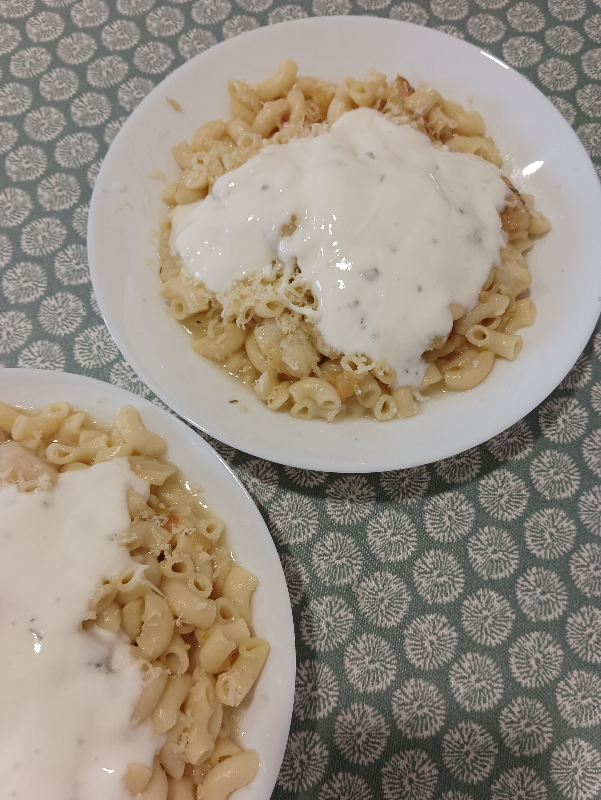

Recipes
Chicken Fajitas
6 servings
Ingredients:
- 3 chicken breasts 🐔
- 1 onion 🧅
- Salt 🧂
- Cumin
- Paprika
- Olive oil 🫒
- 1 red bell pepper 🌶️
- 1 yellow bell pepper 🌶️
- 1 green bell pepper 🌶️
- Sour cream (if available) 🍶
- 6 tortillas 🌮
- Lemon 🍋
- Cheddar cheese 🧀
- Leek or scallions
- Cilantro 🌿
Instructions:
- Cut the chicken into cubes and season with salt, cumin, and paprika.
- Heat a skillet.
- Cut the onion and peppers into strips.
- Add olive oil to the skillet and add the chicken, onion, and peppers. Season with salt and sauté.
- Turn off the heat and let it cook in the hot skillet.
- In each tortilla, add sour cream, chicken with vegetables, sautéed scallions, cheese, lemon juice, and cilantro.
- Fold the tortilla and enjoy.
Rice and Salmon
2 servings
Ingredients:
- 2 salmon steaks 🐟
- 2 cloves of garlic, sliced 🧄
- Olive oil 🫒
Ingredients (Rice):
- 1/2 onion 🧅
- 1 garlic clove 🧄
- 1 carrot 🥕
- 150 g white rice 🍚
- Salt 🧂
- Herbes de Provence
- Olive oil 🫒
Instructions:
- For the rice, in a saucepan, add water, onion, garlic, chopped carrot, salt, and olive oil. Bring to a boil.
- Add the rice, and just before turning off the heat, add the Herbes de Provence.
- Five minutes before the rice is done, heat a skillet with olive oil and garlic over low heat for two minutes.
- Add the salmon steaks and cook until they are golden brown.
Mushroom and Veggies Risotto
2 servings
Ingredients:
- Risotto rice (150 g) 🍚
- Mushrooms 🍄
- Lactose-free cheese 🧀
- Olive oil 🫒
- Salt 🧂
- Assorted vegetables
- 1/2 onion 🧅
- Dried thyme 🌿
- 2 cloves of garlic 🧄
Instructions:
- In a deep non-stick pan, add water, olive oil, onion, garlic, and sautéed/cut vegetables. Bring the water to a boil.
- Add the rice, salt, mushrooms, and let it cook.
- When it's done, turn off the heat and add the cheese and thyme. Stir well and serve.
Bean Rice with Tomato Pulp
2 servings
Ingredients:
For the bean with tomato pulp:
- Butter beans
- Tomato pulp 🍅
- Garlic and onion for sautéing 🧄🧅
- Thyme 🌿
- Cheese from São Jorge Island 🧀
For the rice:
- White rice 🍚
- Onion and garlic 🧅🧄
- Salt 🧂
- Vegetable broth (Knorr)
Instructions:
- In a pot, sauté garlic, onion, butter beans, thyme, and tomato pulp. Add the São Jorge cheese to the tomato pulp pan as well.
- In a separate pot, prepare the rice with onion, garlic, salt, and vegetable broth.
- Combine the bean mixture with the rice in individual plates when serving.
Oatmeal Porridge
1 serving
Ingredients:
- Water 🚰
- Steel-cut oats 🥣
- Sliced banana 🍌
- Ground cinnamon
- Peanut butter 🥜
Instructions:
- Boil water and add steel-cut oats. As the oats are cooking, add sliced banana and a dollop of peanut butter. Cook until reaching the desired consistency.
- Top with additional sliced banana, ground cinnamon, and more peanut butter, if desired.
- Stir well and enjoy!
Pasta with Fish and Yogurt Sauce
2 servings
Ingredients:
For the fish:
- Garlic and onion for sautéing 🧄🧅
- Fish fillets 🐟
- Salt for seasoning 🧂
- Thyme and rosemary 🌿
- Olive oil 🫒
For the pasta:
For the yogurt sauce:
- Natural yogurt 🍦
- Parsley 🌿
- Black pepper
- Lemon juice 🍋
- Cilantro 🌿
Instructions:
- Sauté garlic, onion, and cook fish with salt, thyme, rosemary, and olive oil.
- Cook pasta with salt.
- Prepare yogurt sauce by mixing yogurt, parsley, black pepper, lemon juice, and cilantro.
- Combine pasta, fish, and top with yogurt sauce. Grate cheese over the dish. Serve and enjoy!

Halal Cart Chicken & Rice with Garlic Sauce
2 servings
Ingredients:
For the chicken:
- Chicken breasts 🐔
- Oregano
- Cumin
- Paprika
- Garlic 🧄
- Chili powder
- Salt 🧂
- Olive oil 🫒
- Lemon juice 🍋
For the rice:
- Normal rice
- Cumin
- Paprika
- Garlic and salt 🧄🧂
- Turmeric
For the sauce:
- Natural yogurt 🍦
- Garlic 🧄
- Cilantro 🌿
- Cumin
- Salt 🧂
- Black pepper
- Lemon juice 🍋
Instructions:
- Cook the chicken with oregano, cumin, paprika, garlic, chili powder, salt, olive oil, and lemon juice on high heat for 6-8 minutes.
- Cook the rice with cumin, paprika, garlic, salt, and turmeric. Add water and let it cook until golden brown.
- Prepare the sauce by mixing natural yogurt, garlic, cilantro, cumin, salt, black pepper, and lemon juice until smooth and creamy.
- Ideally, serve with a salad.
Mó's Poke Bowl with Honey
1 serving
Ingredients:
For the bowl:
- Avocado 🥑
- Raw salmon 🐟
- Sweet and sour sauce
- Rice 🍚
- Soy sauce
- Mayonnaise 🍶
- Honey 🍯
For the rice:
- Boiled rice with salt 🍚🧂
- Optional: Onion or garlic for flavor 🧅🧄
Instructions:
- Mix together avocado, raw salmon, sweet and sour sauce, rice, soy sauce, mayonnaise, and honey.
- For the rice, simply boil it with salt and optionally add a bit of onion or garlic for flavor.
- Combine the rice with the rest of the ingredients and enjoy fresh.